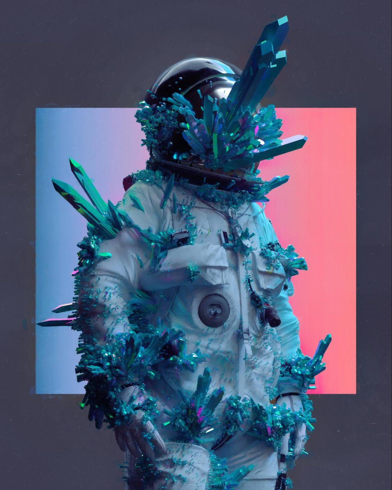

Welcome to World of Digital Art.....
A digital art gallery is a modern platform—either online or in physical spaces—where artworks created or displayed using digital technology are showcased. Unlike traditional galleries that primarily exhibit paintings, sculptures, or photography, digital art galleries focus on art forms born from or enhanced by technology.
What It Is??
- Digital paintings and illustrations
- 3D models and animations
- Interactive installations
- Video art
- NFT (Non-Fungible Token) art
- AR/VR experiences
Some the Our Best Desginers and Their Design:
- Beeple
- “Everydays: The First 5000 Days” – A collage of his first 5000 daily artworks, which sold as an NFT for $69.3 million at Christie’s auction.
- “Crossroad” – An animated piece that changes based on the outcome of the 2020 U.S. presidential election, sold for $6.6 million.
- “Human One” – A kinetic video sculpture that fetched nearly $29 million at auction
- Butcher Billy
- “The Superhero Media Crossover Project” – A series where he reimagines famous superheroes as classic rock stars and other iconic figures, blending different aspects of pop culture to create humorous pieces.
- “Stranger Love Songs” – A collection of illustrations that mash up scenes from the popular TV show “Stranger Things” with classic album covers.
- “The Post-Punk/New Wave Super Friends” – A project where Butcher Billy transforms post-punk and new wave music icons into superheroes, combining his love for music and comic book art.
- David Sossella
- “Monsters and Dames” – A series of illustrations featuring whimsical and fantastical characters, often showcased in art books and conventions.
- “The Dreamcatcher” – An intricate and colorful piece depicting a surreal landscape filled with imaginative creatures and detailed patterns.
- Various Editorial Illustrations – Sossella has created illustrations for magazines, book covers, and advertising campaigns, showcasing his versatility and wide-ranging appeal.

Mike Winkleman, also known as Beelple, is an American graphic designer and digital artist known for his eclectic and surreal artwork that was sold for millions on the NFT market. He creates surreal, eclectic contemporary art, originally made of digital drawings but nowadays principally made of 3D art and visual compositions that blend pop culture references, politics, and contemporary issues with satire.
Notable Works by Beeple:

Billy Mariano da Luz, also known as Butcher Billy, is a Brazilian graphic designer and digital artist known for his eye-catching and provocative work that combines pop culture references with old comic book aesthetics.
Notable Works by Butcher Billy:

Davi Sossella is an Italian illustrator, digital artist, and art director that is known for creating beautiful, fantastical compositions that blend elements of fantasy, surrealism, and pop culture. While Sossella studied architecture, he transitioned to digital art, taking his meticulous attention to detail and combining it with bold colors, and dynamic compositions.
Notable Works by David Sossella:
Artwork Comparison
| Artwork | Artist | Medium | Year | Style/Movement | Location/Collection | Dimensions | Description |
|---|---|---|---|---|---|---|---|
| Starry Night | Vincent van Gogh | Oil on Canvas | 1889 | Post-Impressionism | MoMA, New York | 73.7 × 92.1 cm | Iconic swirling night sky over Saint-Rémy. |
| Mona Lisa | Leonardo da Vinci | Oil on Wood Panel | c.1503 | Renaissance | Louvre, Paris | 77 × 53 cm | Portrait known for its enigmatic smile and sfumato technique. |
| The Persistence of Memory | Salvador Dalí | Oil on Canvas | 1931 | Surrealism | MoMA, New York | 24 × 33 cm | Surreal landscape with melting clocks symbolizing time's fluidity. |
| Composition VII | Wassily Kandinsky | Oil on Canvas | 1913 | Abstract | Tretyakov Gallery, Moscow | 200 × 300 cm (est.) | Large-scale abstract work exploring color and form. |
| Digital Sunrise | Contemporary Artist | Digital Illustration | 2022 | Digital / New Media | Online (Virtual Gallery) | 3840 × 2160 px | High-resolution digital piece made for virtual exhibit. |